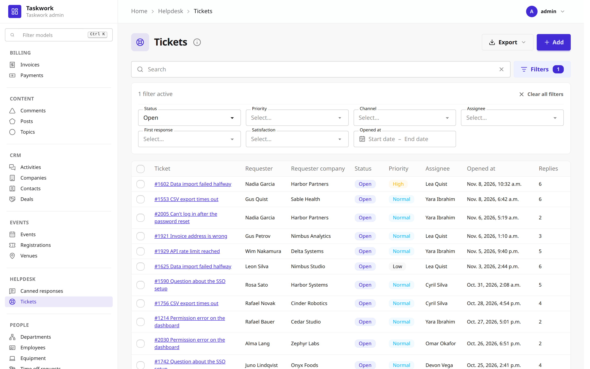
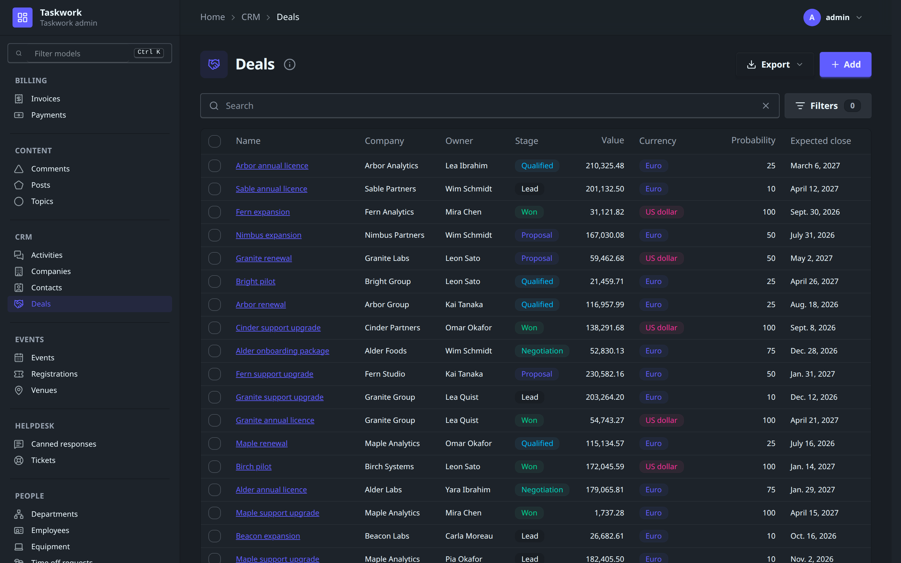
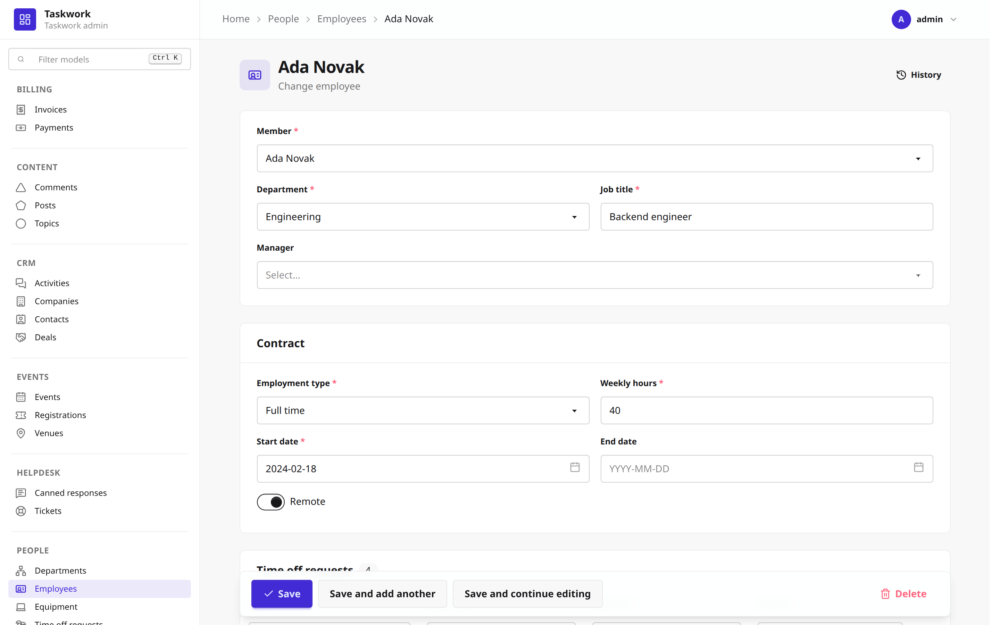
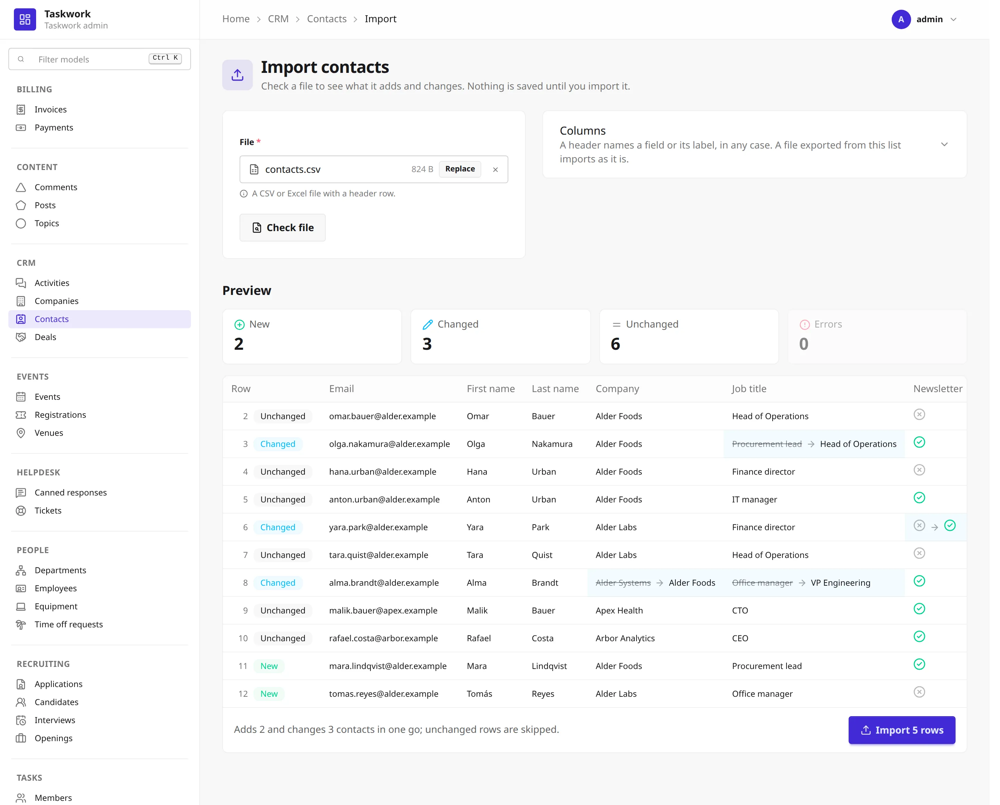

Admin¶
django_formwork.admin is a Django admin built on formwork forms, django-filter, htmx
and Jinja2, styled with DaisyUI. It keeps the names, options, hooks, URL names and
permissions of django.contrib.admin, so most admin.py modules port by changing one
import:
# from django.contrib import admin
from django_formwork import admin
@admin.register(Ticket)
class TicketAdmin(admin.ModelAdmin):
list_display = ["subject", "requester", "status", "priority"]
list_filter = ["status", "opened_at"]
search_fields = ["subject", "requester__email"]
inlines = [ReplyInline]

The classes are its own. A ModelAdmin does not subclass Django's, so an admin class
written for django.contrib.admin that calls into Django's internals needs changes.
Experimental
The admin is new and its API can change in any release before 1.0.
Setup¶
1. Install¶
The admin extra installs django-filter and Jinja2.
2. Settings¶
INSTALLED_APPS = [
...,
"django.contrib.admin", # the history log (LogEntry)
"django.contrib.auth",
"django.contrib.contenttypes",
"django.contrib.messages",
"django.contrib.staticfiles",
"django.forms",
"django_iconx",
"django_formwork",
"django_formwork.admin",
]
MIDDLEWARE = [
"django.contrib.sessions.middleware.SessionMiddleware",
"django.contrib.auth.middleware.AuthenticationMiddleware",
"django.contrib.messages.middleware.MessageMiddleware",
...,
]
The admin writes its history to Django's LogEntry, so django.contrib.admin must be
installed. Its system checks also ask for a DjangoTemplates backend with the request,
auth and messages context processors. The admin pages themselves render through a
private Jinja2 engine, so TEMPLATES needs no Jinja2 backend.
Run manage.py migrate after you add the app.
manage.py check reports a missing app or middleware, and checks every registered
ModelAdmin for the mistakes Django's admin checks catch, under the same numbers:
formwork_admin.E108 for an unknown list_display entry, formwork_admin.E116 for a
broken list_filter entry, and so on.
3. URLs¶
from django.urls import include, path
from django_formwork.admin import site
urlpatterns = [
path("__formwork__/", include("django_formwork.urls")),
path("admin/", site.urls),
]
django_formwork.urls serves the relation search of the dropdowns. The site's URL
names match Django's, so reverse("admin:helpdesk_ticket_change", args=[ticket.pk]) works as
before. To run Django's admin next to this one, give one of the two sites another
name, since both use the admin namespace by default.
4. CSS¶
Import admin.css after formwork.css in your Tailwind entry and build it as in
Installation:
@import "path/to/site-packages/django_formwork/static/formwork/formwork.css";
@import "path/to/site-packages/django_formwork/admin/static/formwork_admin/admin.css";
@import "./static/iconx/icons.css" layer(components);
admin.css registers the admin's templates with @source, so Tailwind finds their
classes. Then point the site at the built file:
# myproject/admin_site.py
from django_formwork.admin import AdminSite
class MyAdminSite(AdminSite):
site_header = "Helpdesk"
stylesheets = ("dist.css",)
The navigation and the actions use Lucide icons, so run manage.py formwork install
once, as for the widgets.
5. Scripts¶
The site loads htmx 4, its Alpine bridge and Alpine.js from a CDN. To serve them
yourself, override scripts (htmx and the bridge) and alpine_script on your site
class.
The site¶
django_formwork.admin.site is the default site. FORMWORK_ADMIN_SITE names its class,
and every app's admin module is imported at startup (FORMWORK_ADMIN_AUTODISCOVER
changes the module name). Attributes of AdminSite that Django's site does not have:
| Attribute | Default | Description |
|---|---|---|
stylesheets |
("formwork/formwork-dist.css",) |
Static paths of the built CSS. |
scripts |
htmx 4 and hx-alpine-compat |
Scripts loaded before the admin's own. |
alpine_script |
Alpine.js 3.15 | Loaded last, with defer. |
themes |
("light", "dark") |
The DaisyUI themes the theme menu offers. The first is the default. |
site_title, site_header, index_title, site_url, empty_value_display,
enable_nav_sidebar, login_form, password_change_form, the *_template attributes,
each_context(), get_app_list(), admin_view(), has_permission(), add_action()
and disable_action() work as in Django.

ModelAdmin¶
The list, add, change, delete and history pages read the same options as Django's
admin: list_display, list_display_links, list_filter, list_select_related,
list_per_page, list_max_show_all, list_editable, search_fields,
search_help_text, date_hierarchy, ordering, sortable_by, fields, exclude,
fieldsets, readonly_fields, prepopulated_fields, radio_fields,
autocomplete_fields, raw_id_fields, formfield_overrides, form, inlines,
actions, save_as, save_on_top, preserve_filters, view_on_site, the
has_*_permission() methods, and the get_*(), save_model(), save_formset(),
delete_model() and response_*() hooks.
The forms are formwork forms, so every field renders with formwork's widgets and
templates. A relation gets a Select or SelectMultiple, a date field a DatePicker,
and a datetime field a DatePicker with a time input next to it. As in Django's admin,
a date is typed in the first format of the language's DATE_INPUT_FORMATS, for example
10.01.2026 in German, and the date filter writes its dates the same way. Lists and
read-only fields show DATE_FORMAT and DATETIME_FORMAT.
After a failed save, each field error shows under its field, as in Django's admin. A
form whose Meta.error_display is set keeps that display.

Options this admin adds:
| Option | Description |
|---|---|
icon |
The Lucide icon next to the model in the navigation and the page title. Unset, the model gets a placeholder shape, see below. |
list_badges |
Badge colors per value, by column: {"status": {"active": "success", "archived": "warning"}}. |
list_only_fields |
Load only these columns on the list page. |
list_defer_fields |
Skip these columns on the list page, for a large JSON or text column that no column shows. |
list_only_fields is opt-in. A __str__ that reads a deferred field runs one query per
row.
A model without an icon gets a plain shape instead: a circle, triangle, square, diamond,
pentagon, hexagon or star. The shape comes from a hash of the model's label, so it stays
the same across restarts, and the models of one app get different shapes while there
are no more than seven of them. Set icon on the models you want to tell apart at a
glance and leave the rest to the shapes.
Related objects¶
Next to a relation, the change form has buttons that open the related model's admin in a dialog. Django's admin opens a popup window for the same buttons.
- Add another (plus) adds a row. After the save, the dialog closes and the field chooses the new row. The other fields on the page that point to the same model list the row too, unless they limit their choices.
- Change selected (pencil) edits the chosen row, and the field shows its new name. With only the view permission, the button is an eye and shows the row. Without a chosen row, the button stays in place, dimmed. A many-to-many field has no such button.
Each button shows only with the matching permission on the related model's admin. There is no delete button: delete a row in its own admin.
A relation in the dialog opens the next dialog on top. Esc or the close button closes a dialog, and the browser asks first when its form has unsaved changes. A click with Ctrl or Cmd, or with the middle button, opens the page in a new tab instead.
The dialog loads Django's popup URLs, with _popup=1 and _to_field, so a
response_add(), response_change() or response_delete() that checks for _popup
keeps working. A save in the dialog ends on popup_response_template, by default
formwork_admin/popup_response.html. An override keeps the element with the id
formwork-admin-popup-response: the dialog reads the saved row from its
data-popup-response attribute.
Filters¶
The filter bar is a django-filter FilterSet that the admin builds from list_filter.
An entry can be:
- a field name. Choices, booleans and relations get a dropdown, dates a range picker. Its calendar has the ranges of Django's date filter: Today, Past 7 days, This month and This year.
- a
SimpleListFiltersubclass, as in Django. - a tuple such as
("field", admin.EmptyFieldListFilter)or("category", admin.RelatedOnlyFieldListFilter). - a
django_filters.Filterwith itsfield_nameset, for any lookup django-filter supports. Adjango_filters.RangeFiltershows a min and a max input in one field.
The filters sit in a row under the search box, in the order of list_filter. The
Filters button opens the row and shows how many filters are active. The row is open
when the page loads with an active filter. A list without list_filter keeps the button
in the same place, and its row says that the list has no filters.
The search box filters the same way, through get_search_results(), so ^, = and @
prefixes in search_fields work as in Django. A filter on a many-to-many relation picks
one row, as Django's related filter does.
The list updates as the user types or picks, and the URL keeps every filter, the search, the sort and the page.
With show_facets at its default, admin.ShowFacets.ALLOW, the filter row has a Show
counts switch. The switch adds _facets to the URL, as Django's link does, and each
option then shows how many rows it matches. The count applies the search and the other
filters, but not the filter of the option itself. ShowFacets.ALWAYS shows the counts
without the switch, and ShowFacets.NEVER removes both.
@admin.register(Project)
class ProjectAdmin(admin.ModelAdmin):
list_filter = ("status", "owner")
show_facets = admin.ShowFacets.ALWAYS
Each filter with counts runs one more query. Date and number ranges have no counts. A relation filter that searches its rows on the server shows counts only while all rows fit on its first page of 20.
Columns¶
When the columns of list_display do not fit the width of the list, the list hides
columns from the right and shows a "+N" button at the end of the header. The checkbox,
the first column and the columns of list_display_links always show. The tooltip of
the button names the hidden columns.
The button shows all columns. The table then scrolls sideways, and the checkbox and the first column stay in view. The browser stores the choice per model, so the list opens the same way next time.
A list_editable error in a hidden column shows all columns and scrolls the first error
into view. Without JavaScript, the table scrolls sideways as in Django's admin.
Info dialog¶
The info button next to the list's title opens a dialog about the model:
- the row count, from the same paginator as the list, so a large PostgreSQL table shows its estimate.
- every entry of
search_fieldswith its label and how a word matches: contains, starts with, is or full text.search_help_textshows above them. - every field with its type, the related model and flags such as unique, indexed or null, and the list's default order.
A superuser also sees the table: its name, the database and its version, the model
and admin classes, the indexes and constraints the database has, and the size of the
rows and the indexes on PostgreSQL, MySQL and on SQLite builds with the dbstat
table. The dialog loads from the
info/ URL the first time it opens, so the list page runs no extra queries. Override
formwork_admin/change_list_info.html to change what it shows.
Actions¶
@admin.action takes two more arguments:
@admin.action(description="Archive selected tickets", icon="archive", danger=True)
def archive(self, request, queryset): ...
icon names a Lucide icon for the action bar, and danger draws the button in the
error color. Actions run as in Django: a function gets (modeladmin, request, queryset)
and a name resolves to a method of the admin. The bar appears when a row is selected,
and shift-click selects a range.
Inlines¶
TabularInline and StackedInline take Django's options (extra, min_num,
max_num, fk_name, can_delete, show_change_link, classes, formset). Rows are
added and removed in the browser, and the formset indexes stay contiguous.
Export¶
The Export menu next to the add button writes the list as a CSV, Excel or JSON file. The file holds every row that the filters and the search let through, in the list's sort order, not only the current page.
@admin.register(Ticket)
class TicketAdmin(admin.ModelAdmin):
export_fields = ["id", "subject", "requester__email", "status", "opened_at", "age"]
export_formats = ("csv", "xlsx")
| Option | Default | Description |
|---|---|---|
export_fields |
every field | The columns: field names, __ lookups, admin methods and callables, as in list_display. |
export_formats |
("csv", "xlsx", "json") |
The formats the menu offers. An empty tuple hides the menu. |
export_background_threshold |
5000 |
Above this many rows the export runs as a task. None keeps every export in the request. |
A foreign key exports the primary key of the related row, a many-to-many field the
sorted primary keys. Excel keeps numbers, dates and booleans as such. JSON writes dates
and decimals as text, as DjangoJSONEncoder does. A JSON field stays structured in JSON
and becomes JSON text in CSV and Excel. Excel shows
a datetime in the site's time zone, since Excel has no time zones. The CSV file starts
with a byte order mark, so Excel reads it as UTF-8.
Excel files need openpyxl. Without it, the menu leaves Excel out.
Whoever can see the list can export it. has_export_permission() changes that, and
get_export_fields(), get_export_queryset() and get_export_formats() take the
request like the other get_*() hooks. A new format subclasses formats.FileFormat,
implements write() and read(), and goes into formats.FORMATS under its name.
Large exports¶
Above export_background_threshold, the admin saves an ExportJob and queues it on
Django's task framework after the request's transaction commits. The list then shows a
message with a link to the Exports page. That page is in the account menu. It lists the
user's last 50 exports and refreshes while one still runs. The file goes to the default
storage under formwork_admin/exports/, and only the user who started the export can
download it.
The job runs as that user with the list's filters, search and sort, so a
get_queryset() that limits the rows per user limits the file too.
Django's default task backend, ImmediateBackend, runs the job inside the request, so
the file is ready when the list loads again. For a real background run, set TASKS to
a backend with a worker. To use another queue, override enqueue_export() on your site:
from celery import shared_task
from django_formwork.admin import AdminSite
from django_formwork.admin.exports import run_export_job
@shared_task
def run_admin_export(job_id):
run_export_job(job_id)
class MyAdminSite(AdminSite):
def enqueue_export(self, job):
run_admin_export.delay(job.pk)
The admin does not delete old exports. ExportJob.delete() deletes the row and its
file.
Import¶
Import is off by default. import_formats turns it on and adds an Import button next
to the Export menu:
@admin.register(Contact)
class ContactAdmin(admin.ModelAdmin):
import_formats = ("csv", "xlsx")
import_id_fields = ["email"]
| Option | Default | Description |
|---|---|---|
import_formats |
() |
The formats the Import page reads. An empty tuple hides the button. |
import_fields |
the add form's fields | The fields a row sets. Unset, the fields of the add form without the read-only and file fields. |
import_id_fields |
the primary key | The fields that find the record a row changes. |
The import page checks a file before it saves anything. Pick a file and click Check
file. The preview counts the new, changed, unchanged and invalid rows, and a click on a
count shows only those rows. A changed cell shows the old and the new value, and an
invalid cell shows its error as in list_editable. Import saves the rows in one
transaction and goes back to the list with a summary. While a row has an error, the
Import button stays off: fix the file and check it again.

How the file maps to records:
- A header matches a field by its name or its label, in any case. Other columns are listed as ignored, so a file exported from the list imports as it is.
- A row whose
import_id_fieldsmatch a record changes that record. A row without a match, or with an empty key, adds a new one. Two rows for the same record are an error. - A foreign key column holds the primary key, as the export writes it. A header such as
category__namefinds the record by that field instead. A many-to-many column holds the keys separated by commas, andtags__slugworks the same way. A value that matches no record or several records is an error. - A choice column takes the stored value or the label. A boolean column takes
trueandfalseoryesandno. - A column the file leaves out keeps the record's value on a changed row and gets the field's default on a new row. Records the file does not mention stay as they are. An import never deletes.
- A row that matches its record is skipped: it is not saved and not logged.
Each row runs through the admin's form in a formwork model formset, so the form's
validation applies. Unique fields are checked across the whole file: two rows with the
same email get the error Django would give, with one query per check instead of one per
row. Saving goes through save_form(), save_model() and save_related(), so an
override that sets an owner still runs. Each saved row gets a history entry with
Django's change message.
The formats:
- CSV in UTF-8, with or without a byte order mark, or in Windows-1252. The delimiter is a comma, a semicolon or a tab, whichever the header row has most of. In a file with semicolons, a number can use a decimal comma, as a German Excel saves it.
- Excel reads the first sheet. It needs openpyxl.
- JSON reads a list of objects.
Whoever can add or change records can import. Each row is checked again: a new row
needs has_add_permission(), a changed row has_change_permission() on its record. A
row that fails gets an error. has_import_permission(), get_import_formats(),
get_import_fields(), get_import_id_fields() and get_import_form() take the request
like the other hooks.
The import keeps no copy of the file between the check and the import. Import sends the file again, and the server checks it again. If the file or the records changed since the check, the page shows the new preview instead of importing. The import runs in the request, so a very large file is better split. The preview shows up to 1,000 rows: the ones with errors first, then the changed and the new ones. The counts cover every row.
Users and groups¶
With django.contrib.auth installed, the site registers admins for User and Group,
as django.contrib.auth.admin does on Django's own site. They work as Django's do:
- Add user asks for a username and a password, or turns password-based authentication off. The save opens the change form of the new user for the other fields.
- The change form shows the algorithm and the parameters of the password hash. Its button opens a page that sets a new password or turns password-based authentication off.
- To add a user, the "Change user" permission is necessary too, because a user who can add users can add a superuser.
- The permissions of a group or a user are grouped by model.
When AUTH_USER_MODEL names another model, only Group is registered. For a model that
extends AbstractUser, subclass UserAdmin:
from django_formwork import admin
from django_formwork.admin.auth import UserAdmin
from .models import Account
@admin.register(Account)
class AccountAdmin(UserAdmin):
list_display = ("username", "email", "is_staff")
User and Group are registered before the admin modules of the apps are imported,
so an app can replace them:
from django.contrib.auth.models import Group, User
from django_formwork import admin
from django_formwork.admin.auth import UserAdmin
admin.site.unregister(Group)
admin.site.unregister(User)
@admin.register(User)
class StaffUserAdmin(UserAdmin):
list_filter = ("is_active",)
django_formwork.admin.auth also has UserChangeForm, AdminUserCreationForm and
AdminPasswordChangeForm for form, add_form and change_password_form, and
GroupAdmin. change_user_password_template names the template of the password page.
Templates¶
Every page is a Jinja2 template under formwork_admin/, loaded from the jinja2/
directory of each installed app. To override one, put a template with the same path in
an app listed before django_formwork.admin:
change_list_template, change_form_template and the other *_template options name
Jinja2 templates of the same engine.
Performance¶
- A foreign key column joins only its own relation. Django's admin calls
select_related()without arguments for one, which follows every non-null relation five levels deep. - A relation to a model whose admin has
search_fieldspages its rows from the server. The change form no longer loads the whole related table into a<select>. - Without filters, the list counts a PostgreSQL table of more than 10,000 rows from the
planner's estimate instead of
COUNT(*). Any filter or search counts exactly.EstimatedCountPaginator.estimate_thresholdsets the limit. - A search or filter that can return a row twice keeps the rows unique with a primary
key subquery instead of
DISTINCTover every column. - The filter bar, the search and the paging swap only the list, without a full page load.
Keyboard¶
| Keys | Action |
|---|---|
| Ctrl+K | Filter the navigation |
| / | Focus the list search |
| Ctrl+S | Save and continue editing |
Not supported yet¶
- The raw ID lookup popup. A relation in
raw_id_fieldsgets the searchable dropdown, with the add and change buttons. - The add and change buttons for a relation in
radio_fields. - Prepopulated fields in inline rows.